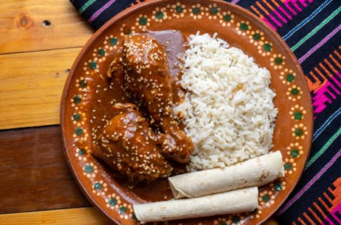

Mole

Description:
Mexican Mole Sauce is made with layers of complex and bold flavors, simmered together over a long period of time before being blended until smooth. Learn how to make this delicious chicken mole and serve with warm rice, beans, wrapped in tortillas, or drizzled over your favorite tacos, nachos, and veggies.
Ingredients:
- 3 dried chipotle chiles, stemmed and seeded
- 2 dried guajillo chiles, stemmed and seeded
- 2 cups ancho chiles, stemmed and seeded
- 2 corn tortillas
- 5 tomatillos
- 2 tomatoes
- Onion
- Garlic
- Peanuts
- Cup raisins
- Cinnamon sticks
- Chicken broth
- 5 ounces of dark chocolate
- Salt
Steps:
- Toast chipotle, guajillo, and ancho chiles in a dry pan over medium heat, stirring constantly, until warm and aromatic, about 3 minutes. Transfer to a blender.
- Heat 2 cups chicken broth in a saucepan until it begins to simmer, about 5 minutes. Pour broth into the blender
- Toast dinner roll pieces and tortillas strips in a dry pan over medium heat, stirring constantly, until lightly browned, about 3 minutes. Transfer to the blender with chicken broth and chiles.
- Allow chiles, toasted bread and tortillas to soak, in the chicken broth until softened. Blend the mixture until smooth.
- Cook tomatillos and tomatoes in a dry skillet on medium-high heat until soft and blackened. Place tomatoes in the blender with the chile.
- Melt lard in a large skillet over medium heat. Stir in onion, garlic, peanuts, raisins, cumming seeds, thyme, allspice berries, and cinnamon sticks. Remove the cinnamon sticks and the other whole spices; add onion mixture to the blender with the chile-tomato mixture and blend until smooth.
- Pour chile puree into a large saucepan over medium heat. Stir 1 cup chicken broth, chocolate, sugar and salt. Bring mixture to a simmer; stir until chocolateis melted and sauce is thickened and slightly reduced.